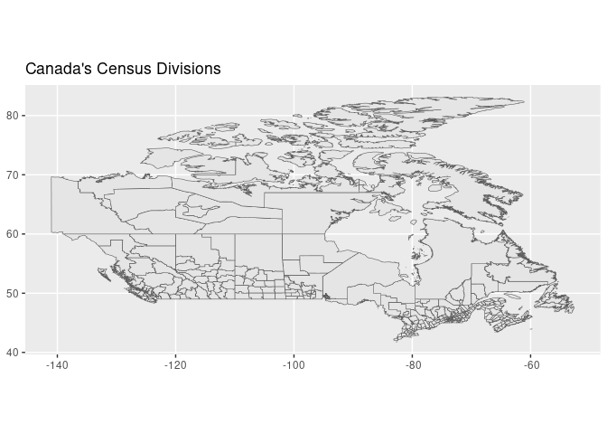
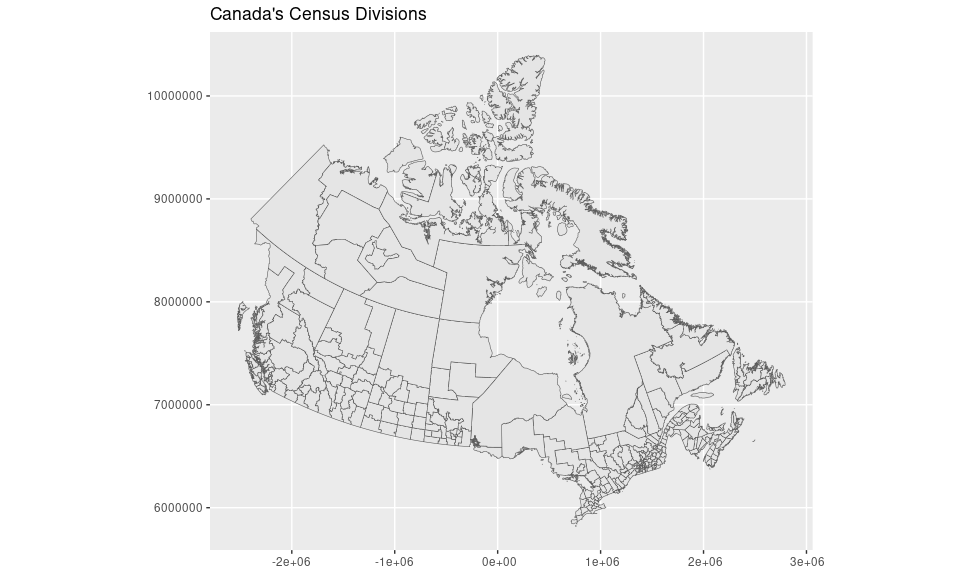
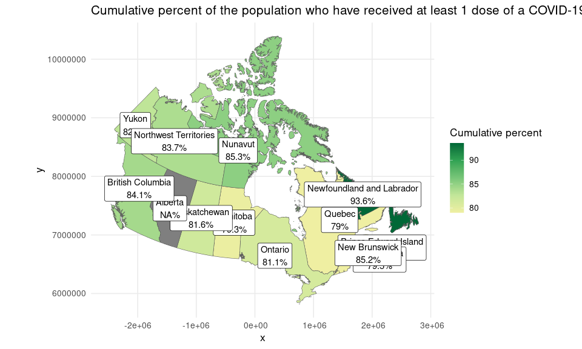
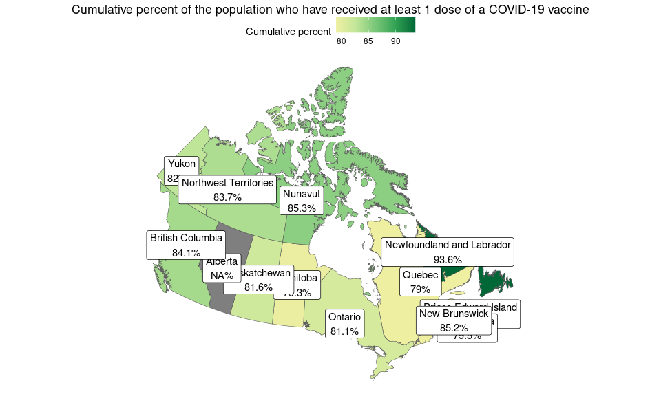
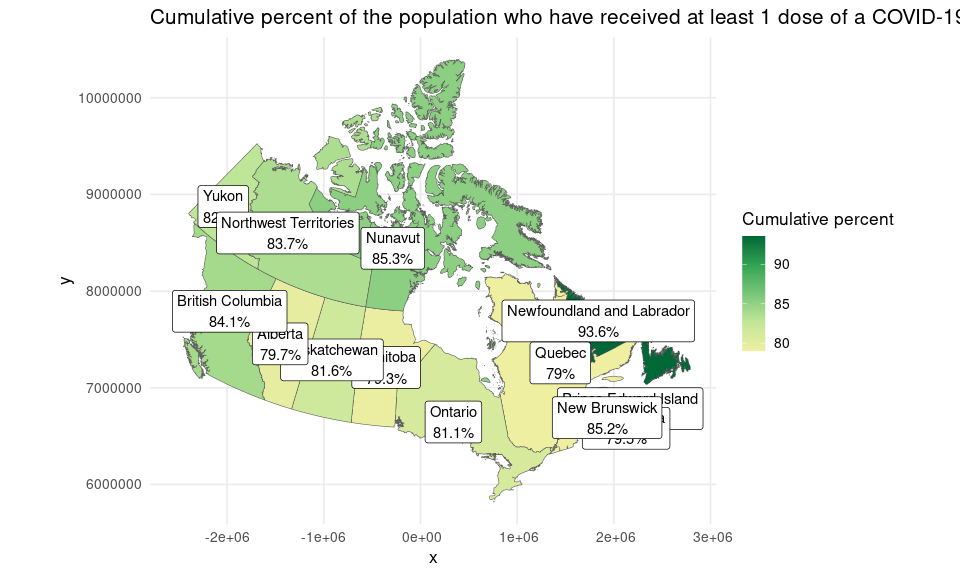

General idea
The idea is to avoid “duplications”, for example instead of adding a provinces map or others, we provide functions to sum Census Divisions in all possible cases.
library(ggplot2)
library(canadamaps)
ggplot(data = census_divisions) +
geom_sf(aes(geometry = geometry)) +
labs(title = "Canada's Census Divisions")
The same idea can be applied to other maps with different levels of aggregation.
ggplot(data = get_agricultural_divisions()) +
geom_sf(aes(geometry = geometry)) +
labs(title = "Canada's Census Agricultural Regions")
ggplot(data = get_economic_regions()) +
geom_sf(aes(geometry = geometry)) +
labs(title = "Canada's Economic Regions")
ggplot(data = federal_electoral_districts) +
geom_sf(aes(geometry = geometry)) +
labs(title = "Canada's Federal Electoral Districts")
ggplot(data = get_provinces()) +
geom_sf(aes(geometry = geometry)) +
labs(title = "Canada's Provinces")Lambert projection
We can change the CRS with the sf package but please read the explanation from Stats Canada.
# shortcut function to change the CRS
census_divisions <- lambert_projection(census_divisions)
ggplot(data = census_divisions) +
geom_sf(aes(geometry = geometry)) +
labs(title = "Canada's Census Divisions")
Using real data
Let’s say I want to replicate the map from Health Canada, which was checked on 2023-08-02 and was updated up to 2024-02-25. To do this, I need to download the CSV file from Health Canada and then combine it with the provinces map from canadamaps.
library(readr)
library(dplyr)
library(sf)
url <- "https://health-infobase.canada.ca/src/data/covidLive/vaccination-coverage-map.csv"
csv <- paste0("data_processing/", gsub(".*/", "", url))
if (!file.exists(csv)) download.file(url, csv)
vaccination <- read_csv(csv, col_types = cols(prop5plus_atleast1dose = col_character())) %>%
filter(week_end == as.Date("2024-02-25"), pruid != 1) %>%
select(pruid, proptotal_atleast1dose) %>%
mutate(
proptotal_atleast1dose = as.numeric(case_when(
proptotal_atleast1dose == ">=99" ~ 99,
TRUE ~ proptotal_atleast1dose
))
)
vaccination <- vaccination %>%
inner_join(get_provinces(), by = "pruid") %>% # canadamaps in action
mutate(
label = paste(gsub(" /.*", "", prname),
paste0(proptotal_atleast1dose, "%"),
sep = "\n"
),
)An initial plot can be done with the following code.
# colours obtained with Chromium's inspector
colours <- c("#efefa2", "#c2e699", "#78c679", "#31a354", "#006837")
ggplot(vaccination) +
geom_sf(aes(fill = proptotal_atleast1dose, geometry = geometry)) +
geom_sf_label(aes(label = label, geometry = geometry)) +
scale_fill_gradientn(colours = colours, name = "Cumulative percent") +
labs(title = "Cumulative percent of the population who have received at least 1 dose of a COVID-19 vaccine") +
theme_minimal(base_size = 13)
We can use different ggplot themes.
ggplot(vaccination) +
geom_sf(aes(fill = proptotal_atleast1dose, geometry = geometry)) +
geom_sf_label(aes(label = label, geometry = geometry)) +
scale_fill_gradientn(colours = colours, name = "Cumulative percent") +
labs(title = "Cumulative percent of the population who have received at least 1 dose of a COVID-19 vaccine") +
theme_void() +
theme(
legend.position = "top",
plot.title = element_text(hjust = 0.5)
)
If we want to fill the information for Alberta, which is not seen in the original map, we can fill and then filter.
library(tidyr)
vaccination <- read_csv(csv, col_types = cols(prop5plus_atleast1dose = col_character())) %>%
arrange(pruid, week_end) %>%
group_by(pruid) %>%
fill(proptotal_atleast1dose, .direction = "down") %>% # Alberta is filled with an older value
filter(week_end == as.Date("2024-02-25"), pruid != 1) %>%
select(pruid, proptotal_atleast1dose) %>%
mutate(
proptotal_atleast1dose = as.numeric(case_when(
proptotal_atleast1dose == ">=99" ~ 99,
TRUE ~ proptotal_atleast1dose
))
) %>%
inner_join(get_provinces(), by = "pruid") %>% # canadamaps in action
mutate(
label = paste(gsub(" /.*", "", prname),
paste0(proptotal_atleast1dose, "%"),
sep = "\n"
),
) %>%
lambert_projection()
ggplot(vaccination) +
geom_sf(aes(fill = proptotal_atleast1dose, geometry = geometry)) +
geom_sf_label(aes(label = label, geometry = geometry)) +
scale_fill_gradientn(colours = colours, name = "Cumulative percent") +
labs(title = "Cumulative percent of the population who have received at least 1 dose of a COVID-19 vaccine") +
theme_minimal(base_size = 13)
Units of aggregation
Census Division
The finest division in this package is the Census Division (CDs) which can be of the next types (reference: https://www.statcan.gc.ca/en/subjects/standard/sgc/2011/sgc-tab-d).
| Language form of CD type | Abbreviation for English language publications | Title for English language publications | Abbreviation for French language publications | Title for French language publications | Abbreviation for bilingual publications | Title for bilingual publications |
|---|---|---|---|---|---|---|
| Bilingual | CDR | Census division | CDR | Division de recensement | CDR | Census division / Division de recensement |
| Bilingual | CT | County | CT | Comté | CT | County / Comté |
| English only | CTY | County | CTY | County | CTY | County |
| English only | DIS | District | DIS | District | DIS | District |
| English only | DM | District municipality | DM | District municipality | DM | District municipality |
| French only | MRC | Municipalité régionale de comté | MRC | Municipalité régionale de comté | MRC | Municipalité régionale de comté |
| English only | RD | Regional district | RD | Regional district | RD | Regional district |
| English only | REG | Region | REG | Region | REG | Region |
| English only | RM | Regional municipality | RM | Regional municipality | RM | Regional municipality |
| French only | TÉ | Territoire équivalent | TÉ | Territoire équivalent | TÉ | Territoire équivalent |
| Bilingual | TER | Territory | TER | Territoire | TER | Territory / Territoire |
| English only | UC | United counties | UC | United counties | UC | United counties |
The division type is specified in the census_divisions table.
Census Agricultural Regions
Census Agricultural Regions (CARs) can be obtained as sums of CDs. Excluding some special cases for Northwestern Territories, Nunavur and Yukon that we clarified over email communication, the source to match CDs to CARs was obtained from Census of Agriculture Reference Maps and manually organized in a spreadsheet (https://github.com/pachadotdev/canadamaps/tree/main/data_xlsx).
Economic Regions
Economic Regions (ERs) can be obtained as sums of CDs. The only special case is the Halton, which belongs to two economic zones and it’s the only CD that has to be carefully separated (i.e. see https://github.com/pachadotdev/canadamaps/blob/main/data_processing/02_census_divisions_and_derivatives.R).